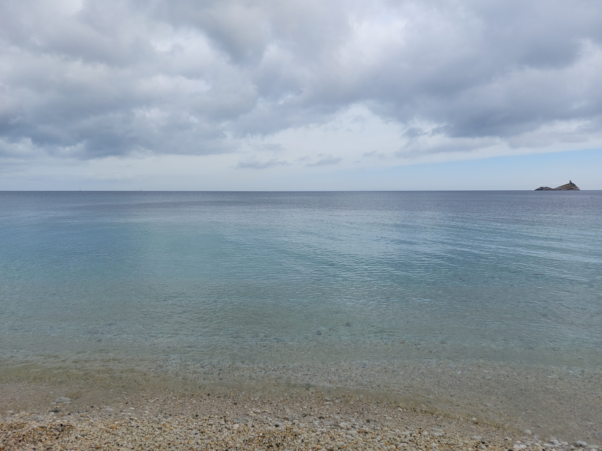
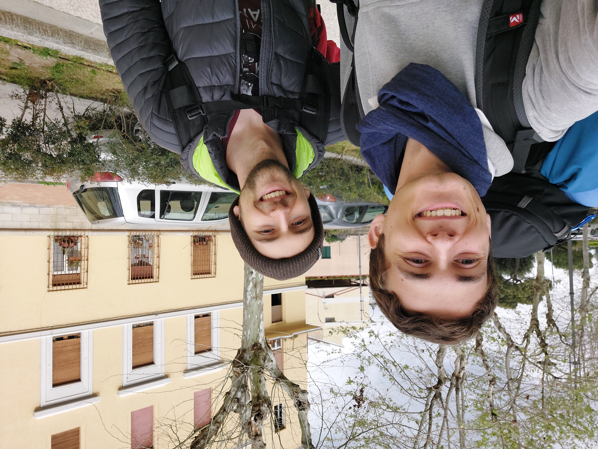
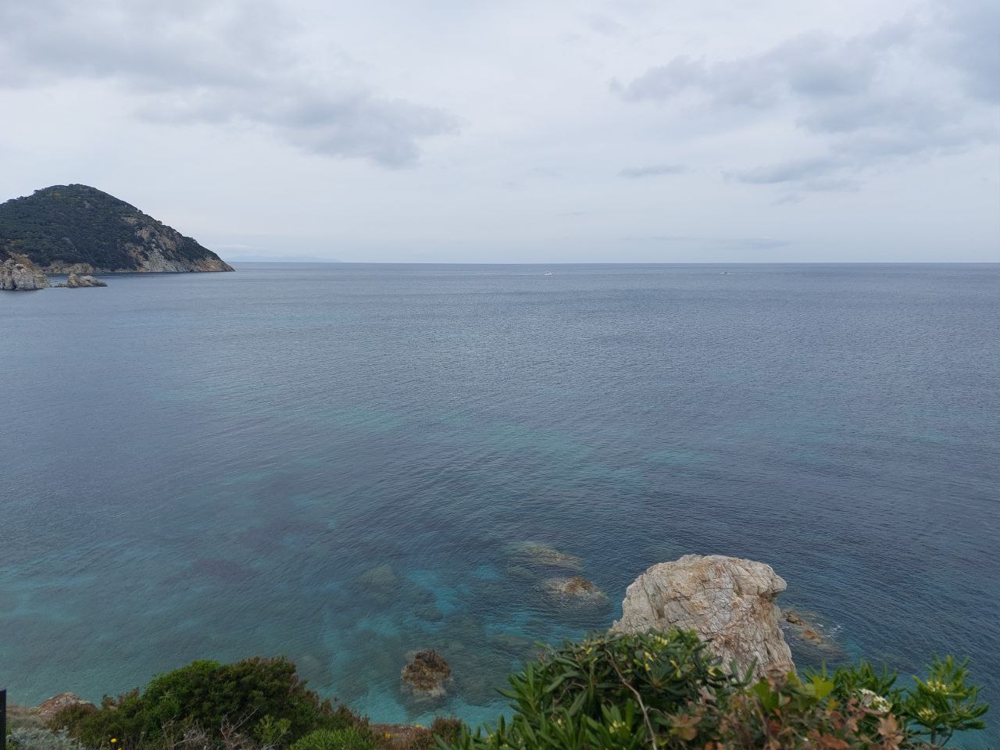
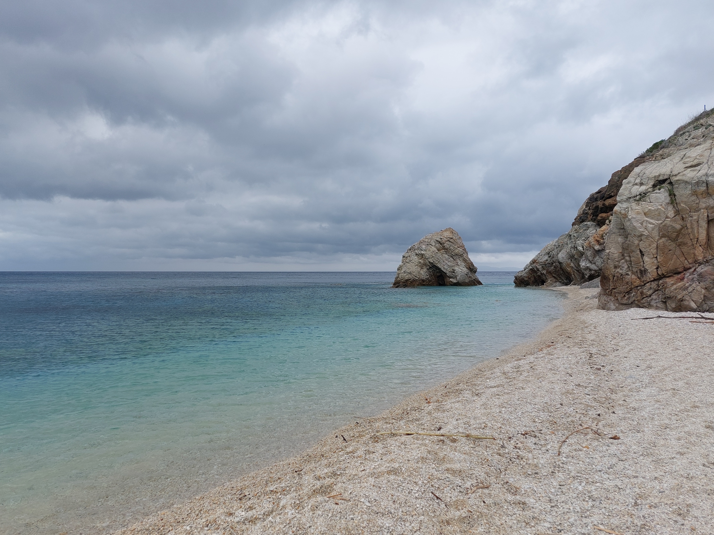
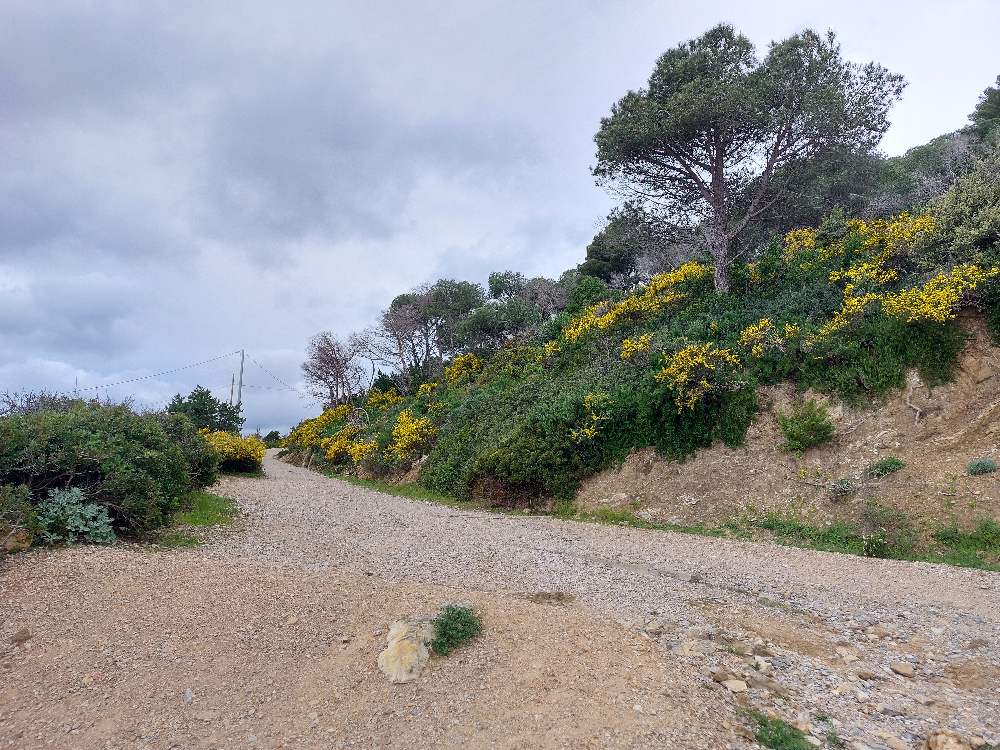
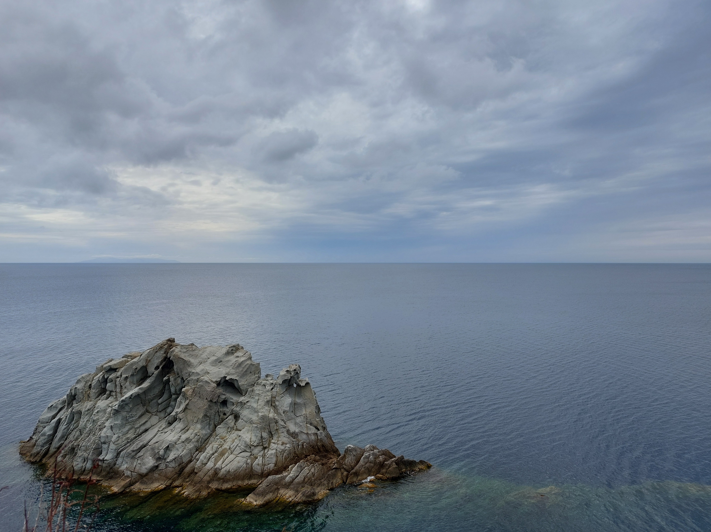
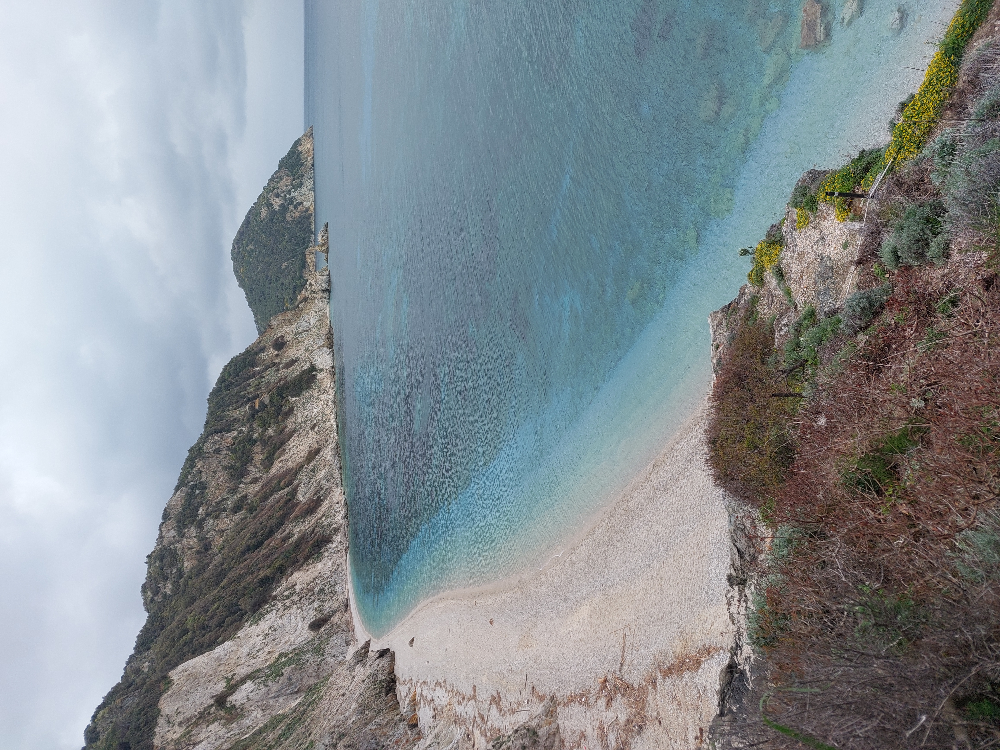
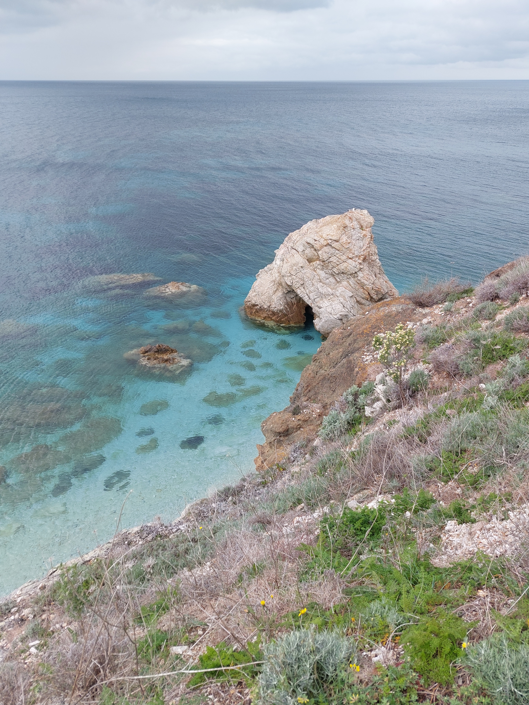
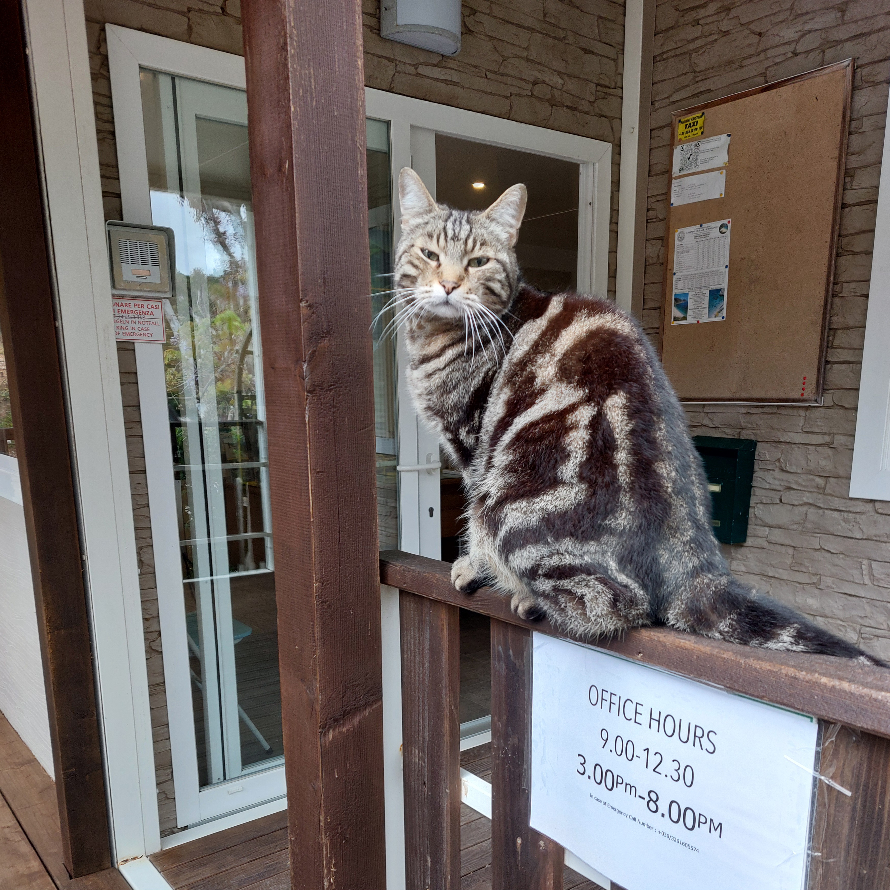

Un pomeriggio di marzo, davanti a un caffè da Tripoli, Giovanni mi fa notare che l’Isola d’Elba è particolarmente vicina. La mattina di sabato 12 aprile, tra un esame e l’altro, saliamo sul treno per Piombino. Lo zaino consta di tenda, materassino, il necessario per la notte fuori e dispense di Elementi di Probabilità e Statistica.
Sul treno incontriamo quattro ragazzi autodefinitesi "un po’ campagnoli" della provincia fiorentina, pure loro zaino in spalla. Uno indossa l’inconfondibile maglione blu, scopriamo che sono scout Agesci. Consigliano la Buca delle Fate per una futura notte fuori. Scendiamo a Piombino Marittima, saliamo sul traghetto e alle 9:30 siamo già a Portoferraio. Sull’isola ci muoviamo a piedi.
A cinque minuti dal porto raggiungiamo la spiaggia delle Ghiaie. La vista dell’acqua cristallina e della spiaggia di - per l’appunto - ghiaia deserta è il primo di tanti momenti di stupore di fronte alla bellezza dell’Elba.


Compriamo il pranzo (nota di merito per il buonissimo panificio di fronte alla Conad di Portoferraio, dalla cui panettiera abbiamo comprato pane integrale sufficiente a soddisfare il nostro fabbisogno calorico di una settimana) e ci incamminiamo verso nord-ovest con destinazione Camping “La Sorgente”, dall’omonima spiaggia. Ci si mette circa un’ora (poco di più se anche voi sentite la necessità di fermarmi per ammirare la costa elbana). Non è banale trovare l’entrata del campeggio. Potremmo essere gli unici ospiti di nazionalità italiana. Piantiamo la tenda e scendiamo a Sansone: forse la spiaggia più bella dell’isola. Ci sono già stato, ma sono comunque piacevolmente non pronto: seguono diversi minuti in cui riesco solo a sorridere e commentare: “è proprio un bel posto” :)


Ora del bagnetto! L’acqua è fredda ma ci si può stare dentro, Giovanni pensa non meno di 15 °C (pensa bene). Si vedono pesci di almeno tre o quattro specie diverse, prevalentemente occhiate. Seguono una piacevolissima doccia calda, pranzo dei campioni e pennichella postprandiale.
Il pomeriggio giretto sulla penisola dell’Enfola, che pure offre paesaggi mozzafiato. Il percorso è un anello con deviazione per Capo Enfola (si retrae per deformazione su S1). I forti degli anni '20 lungo tutto il percorso sull’Enfola possono fornire buon riparo per la notte a esploratori che prediligono alloggi non canonici. Attraversare le gallerie, inoltre, è un ottimo modo per annodare alla penisola il filo invisibile che segue ognuno di noi dalla nascita.


Decidiamo di cenare all’unico ristorante aperto in zona. Tentando di uscire dal campeggio per vie non convenzionali, vediamo una lepre. Alla cena seguono incontro con micio elbano e passeggiata notturna sulla spiaggia: la notte è più buia che sulla terraferma, sicuramente senza nuvole si vedrebbe un bellissimo cielo stellato. Poi nanna.
Il cinguettio degli uccellini alle cinque di mattina ci sveglia come vere principesse Disney. Il campeggio la mattina sa proprio di vacanza :)
Colazione a base di biscotti e kefir, poi torniamo in spiaggia.



Smontiamo la tenda e lasciamo el campeggio: abbiamo l’onore di incontrarne il gatto. Partiamo accompagnati da una leggera pioggia. La pioggia leggera persiste ed è sempre meno tale. Il piano iniziale prevedeva una visita alla residenza napoleonica Villa di San Martino, ma visto il meteo preferiamo evitare. A Portoferraio è quasi tutto chiuso, musei compresi. Dopo pranzo, ormai più bagnati che asciutti, ci ripariamo dalla pioggia in tale "Voglia di Sicilia" per aspettare il traghetto davanti a tè caldo e salame al cioccolato. Anticipiamo di un paio d’ore la partenza dall’isola.
Citando un grande sostenitore dei fisici: “Secondo voi, quanto abbiamo speso?”
In totale circa 110€ a testa così distribuiti: